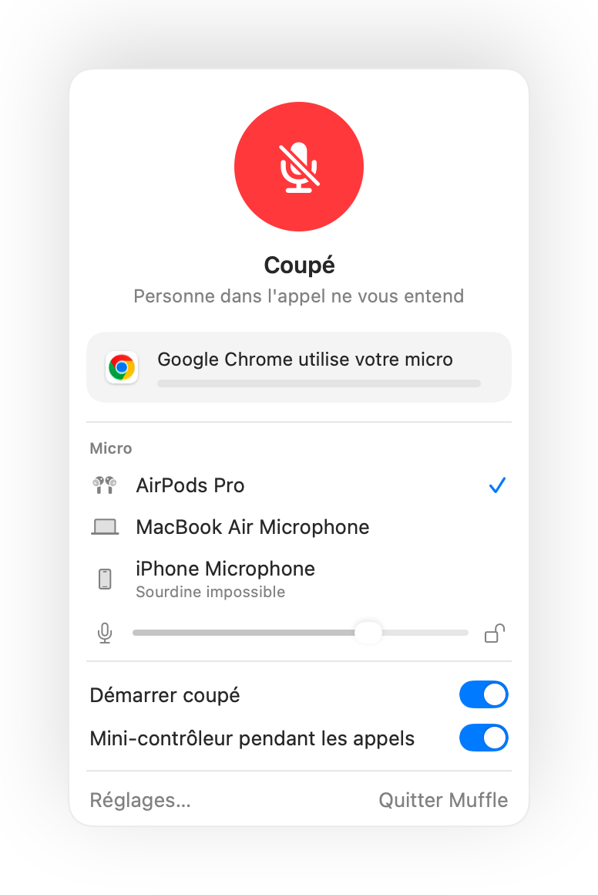

La sourdine des AirPods ne fonctionne pas sur Mac ? Voici la solution
macOS permet de couper un appel en appuyant sur la tige des AirPods, mais uniquement si le logiciel de conférence prend en charge cette option. Beaucoup l'ignorent, notamment Chrome et les services en ligne. Vous appuyez, vous entendez un signal d'erreur, et vos interlocuteurs continuent de vous entendre.
Muffle apporte cette prise en charge à toutes vos applications. Il capte l'appui, coupe le micro de votre Mac et émet le son habituel de confirmation.
Utiliser l'appui des AirPods avec toutes les applications
- 1
Installez Muffle et sélectionnez Autoriser l'accès au micro. macOS ne transmet ce geste qu'aux apps habilitées à gérer le micro.
- 2
Vérifiez que l'option « Couper et activer le micro avec un appui AirPods » est bien cochée dans les Réglages de Muffle.
- 3
Rejoignez un appel. L'appui fonctionne uniquement lorsqu'une app utilise activement le micro.
- 4
Appuyez une fois sur la tige pour couper le son, puis réappuyez pour le réactiver.

- En dehors des appels, cet appui continue de lancer ou de mettre en pause votre musique comme d'habitude.
- Si vos écouteurs utilisent un réglage différent pour les appels, consultez les options de vos AirPods dans Réglages Système.
Questions fréquentes
Pourquoi mon Mac émet-il un son d'erreur quand j'appuie sur mes AirPods ?
L'app utilisée pour votre appel ne gère pas la commande de sourdine des AirPods, ce qui pousse macOS à rejeter l'action. Avec Muffle en arrière-plan, l'appui coupe bien votre micro.
Quels modèles d'AirPods prennent en charge ce raccourci ?
Les AirPods Pro, les AirPods 3 et versions ultérieures, les AirPods Max, ainsi que les modèles de casque Beats avec commandes d'appel.